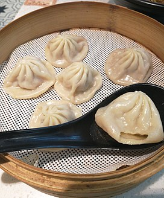

烤乳豬
北京烤鴨
小籠包
心得分享

[全文分享] 小籠饅頭的歷史可上溯自北宋，現在的河南開封為當年的首都汴京，至今仍流行「灌湯包」。
靖康之難後，宋室南渡，將中原的麵食飲食習慣一併帶到南方，逐漸本地化發展的小籠包亦因此開始成為江浙一帶的代表性食物,
尤以清同治年間後，在今常州、無錫一帶出現了現代形式的小籠饅頭。
歷史流傳中，小籠饅頭逐漸形成了上海南翔小籠饅頭、無錫小籠饅頭、紹興喉口饅首、蟹粉小籠、蝦肉小籠、加蟹小籠，以及傳至台灣後的台灣小籠包等流派。
首頁
烤乳豬
北京烤鴨
心得分享